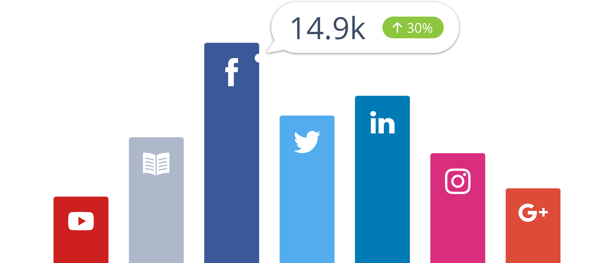
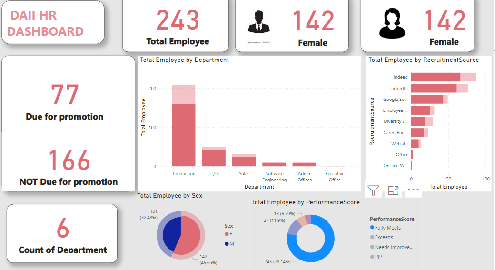
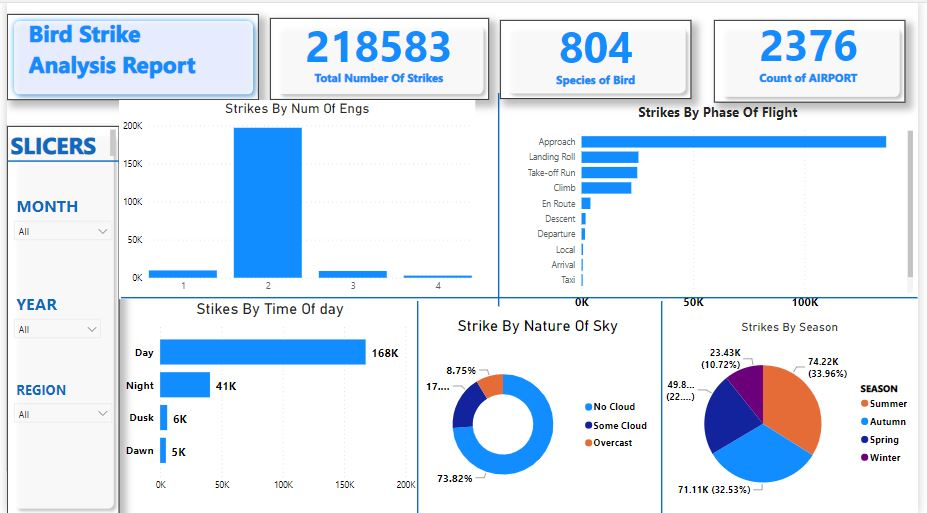

Analysing customer feedback
In this project, I tackled the challenge of extracting valuable insights from a vast pool of customer feedback data.
The primary goal was to uncover underlying sentiments, identify key pain points,
and gain a comprehensive understanding of customer experiences
Tools Used:
Python,PowerBI


Problem Statement:
In this project, my focus was on addressing the critical challenge of customer churn. The primary objective was to
develop a predictive model that could anticipate which customers were at risk of churning – discontinuing their relationship with the company.
Churn prediction is crucial for businesses, as retaining existing customers is often more cost-effective than acquiring new ones ,Tools used are Python,PowerBI

Problem Statement
In this project, I undertook the task of predicting house prices for Airbnb listings. The central challenge was to develop a reliable model that could accurately estimate the rental price of houses based on various attributes.
This predictive model serves as a valuable resource for both hosts and potential guests, aiding in pricing decisions and informed choices. Tools used:Python,Streamlit

Problem Statement:
In this project, I delved into the realm of social media marketing to tackle the
challenge of optimizing marketing strategies using A/B testing. The primary goal was to evaluate the effectiveness of
different approaches or variations in social media campaigns. By conducting rigorous A/B tests, the project aimed
to identify which marketing tactics yielded the best results,
ultimately enhancing the company's social media engagement and conversion rates. Tools used:Python,PowerBI

Problem Statement:
In this project, I embarked on a journey of data exploration using SQL to uncover
insights and patterns within a dataset. The main objective was to gain a comprehensive understanding of the data's structure, relationships, and distribution.
By leveraging SQL queries, I aimed to extract valuable information that could
inform strategic decisions and drive actionable insights.Tools used:SQL

Problem Statement:
In this project, I focused on Human Resource (HR) analytics to address challenges related to employee management and organizational performance. The primary goal was to use data-driven techniques to extract meaningful insights from HR data.
This project aimed to optimize various HR processes, enhance employee satisfaction, and contribute to overall business growth.Tools used:PowerBI

Problem Statement:
In this project, I addressed the challenge of airstrike incidents caused by bird strikes at airports. The primary objective was to analyze bird strike data to better understand the frequency, patterns, and potential risks associated with bird strikes.
This project aimed to enhance aviation safety, reduce aircraft damage, and minimize operational disruptions caused by these incidents.Tools used:Python,PowerBI
Problem Statement:
In this project, I delved into the realm of financial analysis to understand the financial health and performance of a company. The primary objective was to evaluate the company's financial statements, ratios, and key performance indicators (KPIs) to assess its profitability, liquidity, solvency,
and overall financial stability. This analysis aimed to provide insights that could inform strategic decisions and contribute to sustainable business growth.Tools used:PowerBI,Python
Problem Statement:
In this project, I took on the challenge of analyzing e-commerce sales data to gain insights into sales trends, customer behavior, and product performance. The main objective was to provide actionable insights to the e-commerce business,
enabling them to optimize their sales strategies, enhance customer experiences, and drive revenue growth.Tools Used : PowerBI
Problem Statement:
In this project, I addressed the challenge of effectively segmenting customers based on their behaviors and characteristics. The primary goal was to divide the customer base into distinct groups to better understand their preferences, needs, and behaviors.
This segmentation aimed to enable personalized marketing strategies, improved customer experiences, and optimized resource allocation.Tools Used:Python
Problem Statement:
In this project, I undertook the task of conducting a comprehensive market research analysis for a specific product, industry, or market segment. The main objective was to gather insights into market trends, customer preferences, competitive landscape, and potential opportunities.
This analysis aimed to provide actionable insights to inform strategic decisions, product development, and marketing strategies.Excel
Problem Statement:
In this project, I focused on optimizing a company's supply chain operations to enhance efficiency, reduce costs, and improve overall performance. The primary objective was to address challenges such as inventory management, transportation logistics, demand forecasting,
and production scheduling. The project aimed to streamline supply chain processes and deliver tangible value to the business. Tools used:Power automate,Python
Problem Statement:
In this project, I took on the challenge of predicting the life expectancy of patients based on various medical and demographic factors. The primary objective was to develop a predictive model that could estimate how long a patient might live based on their health conditions, lifestyle, and other relevant features.'
' This project aimed to provide valuable insights to healthcare providers for treatment planning, resource allocation, and patient care strategies.Tools used:Python
Problem Statement:
In this project, I focused on analyzing energy consumption patterns to provide insights into usage trends, efficiency improvements, and potential cost-saving opportunities. The primary objective was to understand how energy was being utilized within a specific context, whether it was a commercial building, industrial facility, or residential complex.
This analysis aimed to guide energy management strategies, optimize consumption, and enhance sustainability effortsTools used:Python,PowerBi
Problem Statement:
In this project, I delved into the realm of real estate by analyzing market trends to provide insights into property values, demand, and market dynamics. The primary objective was to understand the factors influencing property prices and identify trends that could impact buying,
selling, and investment decisions. This analysis aimed to inform real estate professionals and potential buyers about the market's trajectory.
Problem Statementx
In this project, I addressed the challenge of analyzing customer purchasing behavior through market basket analysis. The primary objective was to uncover associations and relationships between products frequently purchased together. By understanding these patterns,
businesses could optimize their marketing strategies, product placement, and cross-selling efforts to enhance customer experiences and increase revenue..
Problem Statement:
In this project, I tackled the challenge of optimizing product prices to maximize profitability while maintaining competitiveness. The primary goal was to find the optimal pricing strategy that would strike a balance between generating revenue and attracting customers.
This project aimed to identify the right price points for products in a way that aligns with market dynamics and consumer behaviorTools used:Python.